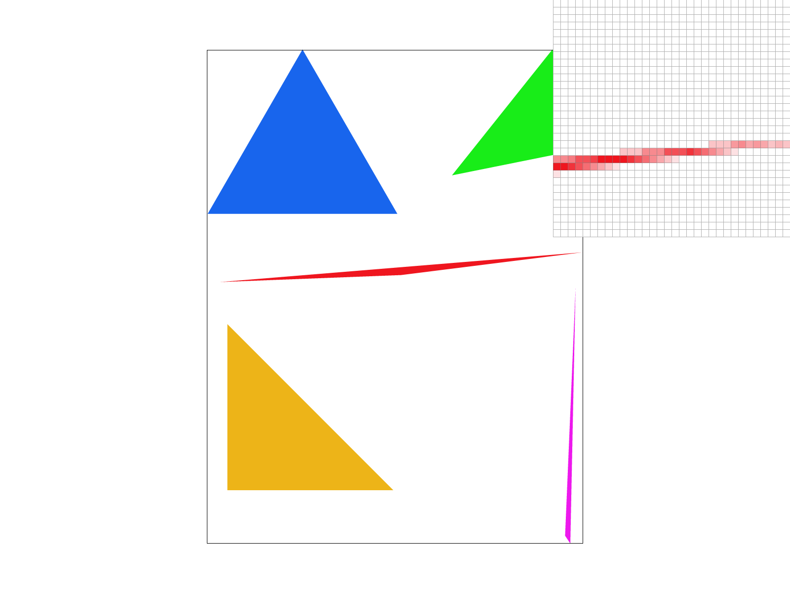
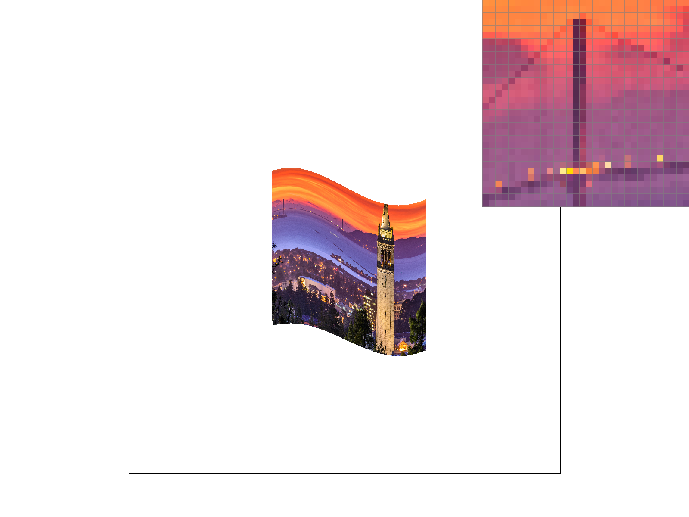

CS184/284A Spring 2025 Homework 1 Write-Up
Link to webpage: https://cal-cs184-student.github.io/hw-webpages-swetha-inas-1/
Link to GitHub repository: https://github.com/cal-cs184-student/sp25-hw1-swetha-inas/
Overview
In this homework assignment, we implemented single-color triangle rasterization, supersampling, transformation functions, multi-colored triangle interpolation using barycentric coordinates, and texture mapping with pixel sampling and mipmap-based level sampling. We learned how rasterization is used in computer graphics to assign values from a continuous scene to individual pixels. We also learned about the significance of supersampling and how it can be used to improve the quality of images by reducing aliasing artifacts. Additionally, we learned about how pixel sampling and level sampling can be used to apply textures to objects in a scene. We implemented two different types of pixel sampling techniques, nearest and bilinear sampling, and used them to assign a pixel in screen space to the correct texture color in texture space. Finally, we implemented level sampling with mipmaps to select the appropriate resolution level of a texture when rendering a particular scene.Task 1: Drawing Single-Color Triangles
We rasterize triangles by iterating through every pixel within the triangle's bounding box and assigning it a specific color in the framebuffer based on whether it lies inside the triangle. Any pixel outside the bounding box is automatically considered outside the triangle, so its default white color in the framebuffer remains unchanged. To determine if a pixel is inside the triangle, we perform three line tests. For each test, we compute a line equation using a pair of triangle vertices and evaluate it at the pixel's center. We then multiply this result, Li(x,y), by winding, which represents the triangle's winding order (positive for counterclockwise order and negative for clockwise). If this computation yields a value less than zero for any of the three line tests, we consider the pixel to be outside the triangle. On the other hand, if this computation yields a value that is greater than or equal to zero for all three line tests, then the pixel is inside the triangle. If the pixel is inside the triangle, we assign it the color specified by the function argument in the framebuffer. Otherwise, we leave its default white color in the framebuffer unchanged. We determine the bounds of the triangle's bounding box using the minimum and maximum x and y coordinates among the three vertices of the triangle. The top-left corner of the bounding box is (min x vertex coordinate, min y vertex coordinate), and the bottom-right corner is (max x vertex coordinate, max y vertex coordinate). This bounding box is the smallest rectangle that fully encloses the triangle as it ensures that at a minimum, all its vertices are contained within it. By definition, if all vertices lie within the bounding box, then all pixels inside the triangle must also be within it. Therefore, it is sufficient to check only the pixel samples within this bounding box, and that is how our rasterization algorithm is implemented.Task 2: Antialiasing by Supersampling
Supersampling is an approximation of 1-pixel box sampling and is useful for enabling anti-aliasing, which limits the effects of certain sampling artifacts like jaggies, false motion, and Moire. By taking multiple samples per pixel and averaging their color values, supersampling ensures the inclusion of intermediate colors, resulting in smoother transitions between pixels inside and outside the triangle and smoother edges overall. First, we resize the sample buffer to be of size width * height * sample_rate instead of size width * height. This follows from the idea that with supersampling, we now sample sample_rate times per pixel, so the sample buffer should store sample_rate color values for each pixel. After resizing and clearing the buffer each time the sample rate changes (to facilitate redrawing the scene when the sample rate is increased or decreased), we implement the supersampling algorithm. Similar to Task 1, we only check pixels within the triangle's bounding box. However, now we now perform our three line tests at the granularity of one sample rather than one pixel. We first take the square root of sample_rate to determine the number of samples to take in each direction (denoted as num_blocks), and calculate the block size (block_size) as 1/num_blocks. Given these values, for each pixel, we iterate num_blocks times in both the x-direction (denoted as i) and the y-direction (denoted as j), calculating the center of each sample as (x + block_size * (i + 0.5), y + block_size * (j + 0.5)) . We then check if this sample center is inside the triangle. If so, we set the value of the color at index (y * width + x) * sample_rate + i * num_blocks + j in the sample buffer to be the color specified by the function argument. Otherwise, we leave the color in the sample buffer at that index unchanged, letting it default to white. After filling the sample buffer, we modify the resolve_to_framebuffer function to average the sample_rate color values for each pixel and write the averaged red, green, and blue values to the framebuffer. This averaging allows the pixels to take intermediate color values, smoothing the edges. Additionally, we modify fill_pixel to store the same color for all supersamples of a pixel in the framebuffer, which is used for rasterizing points and lines. As the sample rate increases, the pixels can take on more intermediate values between red and white, creating a blurring effect that smooths the edges of the red triangle and eliminates sharp jaggies in the image. This effect becomes more noticeable where there are sharp transitions, such as at the corners of the skinny red triangle, which can be seen more clearly in the pixel inspectors for each of the three sampling rates.|
|
|
|
|

|
Task 3: Transforms
We wanted to make the cubeman perform a split jump, so we rotated its left and right legs by 60 degrees. To ensure proper alignment, we translated the left and right leg blocks by (-90, 70) and (90, 70), respectively. To give the cubeman a purple appearance, we filled the polygons with different shades: #C3B2C4 for the torso, #BFADC1 for the head, and #9B7F9D for the arms and legs.
Task 4: Barycentric coordinates
Barycentric coordinates provide a coordinate system for triangles, allowing for the interpolation of values across the triangle's surface. Interpolation enables smooth variation of values across the triangle based on the values at its vertices. These interpolated values can include positions, texture coordinates, colors, and more.
Task 5: "Pixel sampling" for texture mapping
Pixel sampling is used for texture mapping, which is the task of assigning a pixel in screen space to the correct texture in texture space. We first convert the screen space coordinates to u/v coordinates, and then apply one of two different pixel sampling methods (nearest and bilinear) to determine the texture color at the calculated u/v coordinates. The color of the pixel in screen space is then set to the corresponding texture color.Our algorithm leverages the algorithm from Task 4, where we iterate through each sample and compute α, β, and γ for the center of each sample. If α, β, and γ are all nonnegative, we know that the sample center is inside the triangle. In this case, we use the barycentric coordinates to compute a weighted average of the u/v values at the vertices to get the sample's u/v coordinates as follows:
new_u = α * u0 + β * u1, + γ * u2 new_v = α * v0 + β * v1, + γ * v2Using these u/v coordinates and the level 0 mipmap, we can apply either nearest or bilinear sampling to determine the correct texture to apply. For nearest sampling, we return the color of the texel closest to the calculated u/v coordinates, and that is the color that is assigned to the sample in the sample buffer. For bilinear sampling, we identify the four closest texels to the u/v coordinates, and then perform linear interpolation in both the x and y directions to effectively compute a weighted average of the four texel colors. The resulting color is assigned to the sample in the sample buffer.
Below are images of the UC Berkeley seal using nearest sampling at 1 sample per pixel, nearest sampling at 16 samples per pixel, bilinear sampling at 1 sample per pixel, and bilinear sampling at 16 samples per pixel. The image of the seal using nearest sampling appears more pixelated, which is especially noticeable in the letter "N" in "University." The sharp changes in pixel color make the character harder to decipher. In contrast, the image of the seal with bilinear sampling appears more blended, with smoother transitions between pixel colors, making the same "N" clearer. Supersampling with nearest sampling reduces pixelation to some extent, but supersampling with bilinear sampling produces an even smoother texture. Bilinear sampling minimizes pixelation by creating smoother transitions between texture colors through bilinear interpolation. This method assigns a pixel's color in screen space by averaging the colors of the four nearest texels in u/v space. As the image is magnified and sharp color transitions (high frequencies) become more prominent, pixelation from nearest sampling becomes more noticeable, whereas bilinear sampling produces smoother color gradients.
|
|
|
|
|
|
Task 6: "Level Sampling" with mipmaps for texture mapping
Level sampling is used to select the appropriate resolution level of a texture when rendering a 3D scene. This process utilizes mipmap levels, where a texture is sampled at different resolutions, with each level representing a progressively lower resolution than the original texture. The system determines which mipmap level to sample from by estimating the texture footprint using the texture coordinates of neighboring screen samples. This is achieved through one of three methods: nearest level sampling, trilinear filtering (which blends between two adjacent mipmap levels), or anisotropic filtering (which applies an elliptical weighted average to reduce blurriness and distortion).For texture mapping, we implemented three types of level sampling. First, when lsm == L_ZERO, the texture is sampled from the highest resolution mipmap level. Next, L_NEAREST computes the nearest appropriate mipmap level and samples from it. Finally, L_LINEAR computes a continuous mipmap level and performs linear interpolation between the samples of the two closest mipmap levels. This corresponds to trilinear filtering, as described earlier. Depending on the psm value, we obtain samples either through nearest sampling or bilinear sampling.
To implement level sampling in Task 6, we computed barycentric coordinates for the texture coordinates at three sample locations: (x,y)(x,y), (x+1,y)(x+1,y), and (x,y+1)(x,y+1). These values were stored in a SampleParams struct and passed into Texture::sample(sp) to determine the correct mipmap level. Within Texture::get_level(sp), we computed the difference vectors and scaled them by the width and height of the full-resolution texture image to obtain du/dx, dv/dx, du/dy, and dv/dy. We then computed L and D using the following equations:
For L_ZERO, our get_level function returned 0. For L_NEAREST, we rounded D to the nearest integer and returned that value. For L_LINEAR, we returned D as the float value we computed.
Our Texture::sample(sp) function called Texture::get_level(sp) to obtain the mipmap level. If lsm was not L_LINEAR and psm was P_NEAREST, we called Texture::sample_nearest, using the sp struct's p_uv value and the level converted to an integer, then returned this sample. Similarly, if lsm was not L_LINEAR and psm was P_LINEAR, we called Texture::sample_bilinear using the sp struct's p_uv value and the level converted to an integer, then returned this sample. Finally, for L_LINEAR, we called either Texture::sample_nearest or Texture::sample_bilinear for both the floor and ceiling of the returned level, depending on the value of psm. We then interpolated between these two samples and returned the final result.
Level Sampling Method
| Level Sampling Method | Speed | Memory Usage | Antialiasing Power |
|---|---|---|---|
| L_ZERO | Fastest - doesn't require any mipmap lookups | High - generates all textures at full resolution | Lowest - aliasing can be found in minified textures |
| L_NEAREST | Average | Lower - uses only appropriate mipmap levels | Higher - less aliasing |
| L_LINEAR | Slowest - samples from two different mipmap levels | Lower - uses only appropriate mipmap levels | Highest - smooth transitions between mipmap levels |
Pixel Sampling Method
| Pixel Sampling Method | Speed | Memory Usage | Antialiasing Power |
|---|---|---|---|
| P_NEAREST | Fastest - doesn't require any mipmap lookups | Low - only accesses one texel | Lowest - pixelation and jaggies visible |
| P_LINEAR | Blends 4 texels for each lookup | Low | Higher - smoother transitions |
Sampling Rate
| Sampling Rate | Speed | Memory Usage | Antialiasing Power |
|---|---|---|---|
| 1 per pixel | Fastest - less computation required | Lowest - only one texture sample | Lowest - aliasing can be found in detailed areas |
| 4 per pixel | Slower - 4x texture reads | Higher - 4x more memory required | Average - reduces aliasing in edges |
| 9, 16, and more per pixel | Slowest - more computation required | Highest - more memory required | Highest - smooth transitions |
Four versions of our chosen image (UC Berkeley view):
|

|

|
|
|
|